|
I recently graduated from my MSME-R program in the Department of Mechanical Engineering at Carnegie Mellon University I did my research at the Biorobotics Lab and advised by Professor Howie Choset. Currently I am working in Biorobotics Lab as a Research Engineer, working on Pipe inspection robot control/prototyping and modular robot learning I was previously an embedded software intern at Garmin Ltd. I received my BASc. degree from Department of Eletrical and Computer Engineering, University of British Columbia in 2022. |
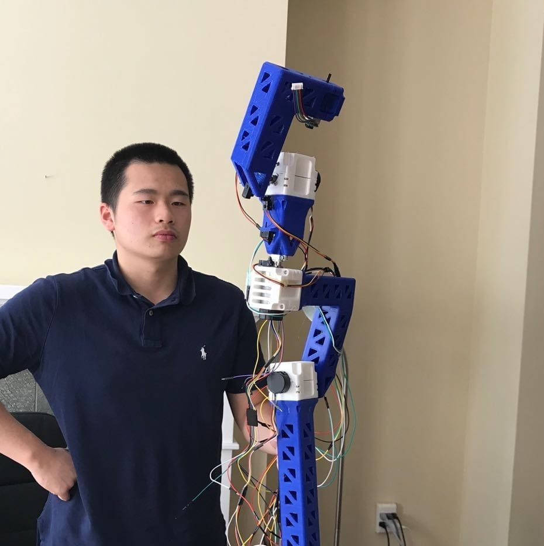 |
{kind=link}
Research/Career InterestsI am deeply passionate about the field of robotics, with a particular focus on modular robots, robot learning, control and planning. My current research is centered around the Modular robot distributed control, reinforcement Learning and planning over control. I hope to explore more on control and planning in robotics, as well as the novel and relatively less explored field of design automation. |
Robot Platforms
Modular Robot - Eigenbot

Unitree Go1
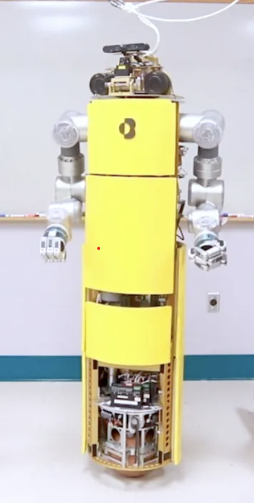
CMU ballbot

KUKA IIWA
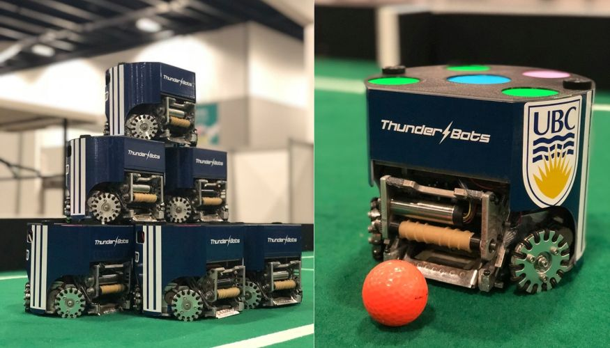
Robocup Robots - Thunderbots
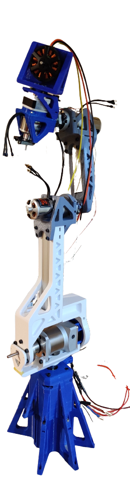
self made 6DoF robot arm
|
Research/Projects |
|
Eigenbot walking and running on Terrain in Simulation |
Zhikai (Logan) Zhang, shankruth balasubramaniyam, Lu Li, Howie Choset Current RL training pipeline gives a centralised end to end policy, which requires heavy tuning and is subjected to unstable performances and local minimum. Such policy needs to be re-trained for different
types of robots and is hard to collect enough data, which is lacking in the robotics field. In order to move closer to a robot foundation model, we propose to modularize different
components of the robot, eg. legs, vision, arms etc. to be pre-trained on variety of tasks. Such modular networks can thus be combined into different configurations and only needs
simpler fine tuning. We hope to simplify the RL design cycle and data collection pipeline with this appraoch.
We use reinforcement learning (PPO) to train a walking/running policy for a modular legged robot. Currently we have done the following in simulation |
|
4 leg walking configuration 
Hardware walking on flat terrain 
Simulation walking on unstable block |
Zhikai (Logan) Zhang, Henry Kou, Siqi Guo, Lu Li, Howie Choset Conventional robotic control methods analyze the entire robot's system to consider every degree of freedom at the same time and are often computationally expensive. However, animals do not think how to walk with their brain, rather, computational units used for control are distributed into the neuron pools in their body parts. In a distributed implementation, we can reduce the computational load and create adaptive behaviors with only local sensory feedback at a Low computational complexity. This is especially relevant for modular robots where each module consists of low power MCUs that cannot compute complex control algorithms online. Our contribution in this study are three folds: 
distributed controller with 6 legs on hardware with hill terrain |

Energy Cost Prediction when approaching an obstacle 
Sim2Real Work |
Zhikai (Logan) Zhang, Siddarth Saha, Sayan Mondal, Gregory Su Real time events are performed with instinct gained from repeated practice, while long term planning optimization requires thinking and understanding of the task at hand. This is analogous to fast and agile movements vs optimal path planning in robotics. Navigating challenging terrains demands a nuanced understanding of the robot's versatile capabilities. Highly agile mobile robots endowed with complex locomotion skills, including climbing, jumping, and walking can often better handle such environments than traditional wheels, but planning for such systems can often be much more difficult. This paper introduces a comprehensive framework for real-time autonomous navigation of such motions by determining path costs using a neural network- based cost predictor by leveraging elevation maps and A* path planning. We demonstrate in simulation that this system can plan paths for multiple different cost functions, such as minimum energy or minimum time, depending on the specified criteria. 
Planned Path based on Costr predidtor 
Planned Path Execution in Simulation |

Ballbot avoid obstacle real time 
Ballbot pushing on wall |
Zhikai (Logan) Zhang, Juan Alvarez-Padilla, Haoru Xue, Christian Berger, Sayan Mondal, Haoru Xue --> slides Several ballbots have been developed, yet only a handful have been equipped with arms to enhance their maneuverability and manipulability.
The incorporation of 7- DOF arms to the CMU ballbot has presented challenges in balancing and navigation due to the constantly changing center of mass.
This project aims to propose a control strategy that incorporates the arms dynamics. Our approach is to use a simplified whole-body dynamics model, with only the shoulder and elbow joints moving for each arm.
This reduces the number of states and accelerates convergence. We focused on two specific tasks: navigation (straight and curved paths) and pushing against a wall.
Trajectories were generated using direct collocation for the navigation task and hybrid contact trajectory optimization for pushing the wall.
A time-variant linear quadratic regulator (TVLQR) was designed to track the trajectories. The resulting trajectories were tracked with a mean-average error of less than 4 cm,
even for the more complex path. These experiments represent an initial step towards unlocking the full potential of ballbots in dynamic and interactive environments.
|

KUKA IIWA arm motion planned with RRT-connect 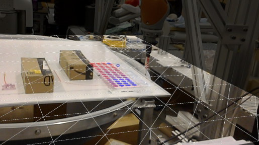Hololens AR interface developed |
Maram Sakr , Zhikai (Logan) Zhang, Benjamin Li, Haomiao Zhang, H.F. Machiel Van der Loos, Dana Kulic, Elizabeth Croft Learning from Demonstration (LfD) is a framework that allows lay users to easily program robots. However, the efficiency of robot learning and the robot's ability to generalize to task variations hinges upon the quality and quantity of the provided demonstrations. Our objective is to guide human teachers to furnish more effective demonstrations, thus facilitating efficient robot learning. To achieve this, we propose to use a measure of uncertainty, namely task-related information entropy, as a criterion for suggesting informative demonstration examples to human teachers to improve their teaching skills. In a conducted experiment (N=24), an augmented reality (AR)-based guidance system was employed to train novice users to produce additional demonstrations from areas with the highest entropy within the workspace. These novice users were trained for a few trials to teach the robot a generalizable task using a limited number of demonstrations. Subsequently, the users' performance after training was assessed first on the same task (retention) and then on a novel task (transfer) without guidance. The results indicated a substantial improvement in robot learning efficiency from the teacher's demonstrations, with an improvement of up to 198% observed on the novel task. Furthermore, the proposed approach was compared to a state-of-the-art heuristic rule and found to improve robot learning efficiency by 210% compared to the heuristic rule.
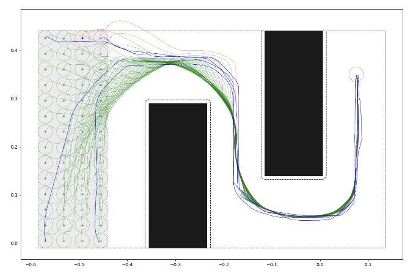
TPGMM online unsupervised Learning |
|
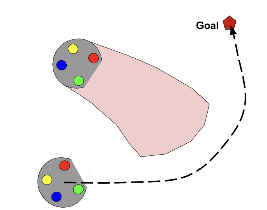
Path Planning 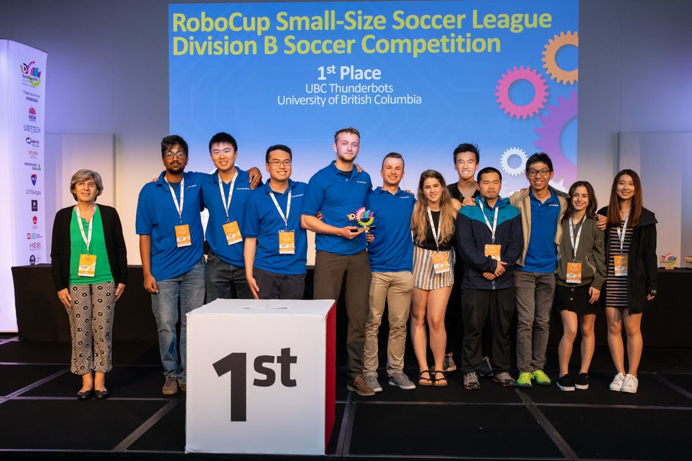Winning First Place in Robotcup 2019 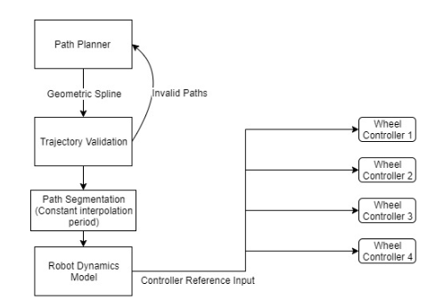Control Archetecture Overview |
As the Eletrical Sub-team Co-Lead, I spearheaded multiple projects, including Eletrical system redesign, Wifii system integration and FPGA Updates.
Technical Work during this Time includes Wifi firmware integration, Robot firmware development, part of Robot Main board design, FPGA intrgration with Wifi system on SPI protocol, Planning Software as well as solenoid curve fitting for better chipping and kicking performance.
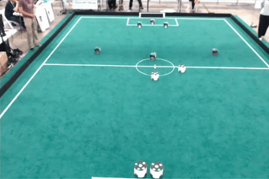
Goal by chipping in Robocup 2019 
Dribbler ball steal and shoot for goal with motion Primitive |
|
Robot Arm Version 2 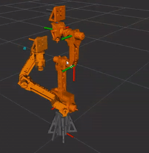ROS Integration with Robot Arm Version 2 |
In this personal Project, I have worked with the following:
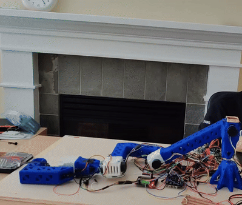
Robot arm version 1 with trajectory control, smoother than set point control 
Robot arm version 1 with set point control |
Experiences |
|
CV based Yaw estimation in noisy reflective pipe CV based Yaw estimation in field deployment pipe (less noisy) |
Pipe Force specializes in intelligent in-pipe surveying and digitizing pipe assets using robotics and AI, providing actionable data that helps infrastructure owners minimize
maintenance costs due to pipe failure. This startup stemmed from the Biorobotics Lab Orienatation Control Simulation vs Hardware |
|
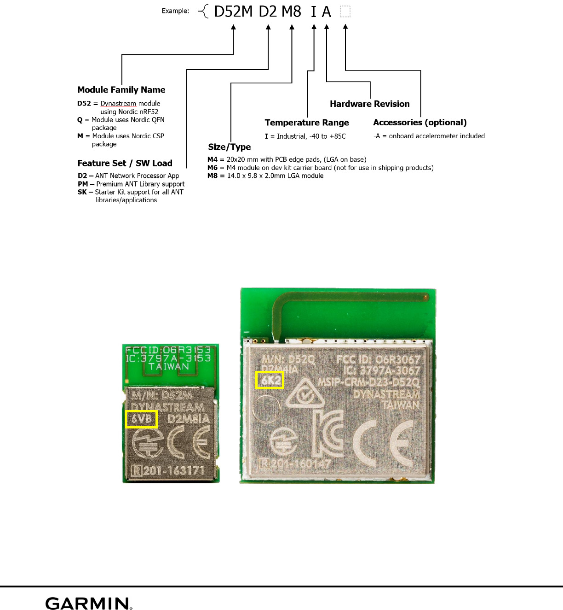
ANT protocl chip module 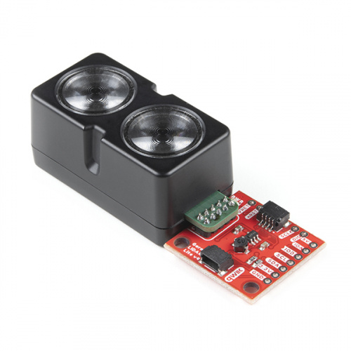Lidar-lite V4 wireless sensor |
As an Embedded Software Intern, I worked on vrious projects in Garmin, including ANT network (Low energy Wireless network used internally in Garmin), large scale BLE mesh testing and firmware debugging/testing, Lidar-lite V4 sensor, and other frimware testing scripts such as connection tests and battery data analysis. ANT protocol 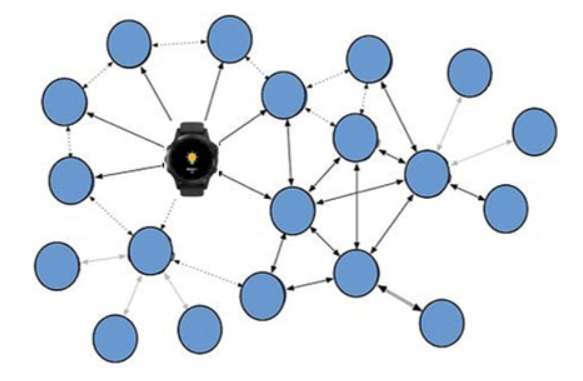BLE Mesh Network |